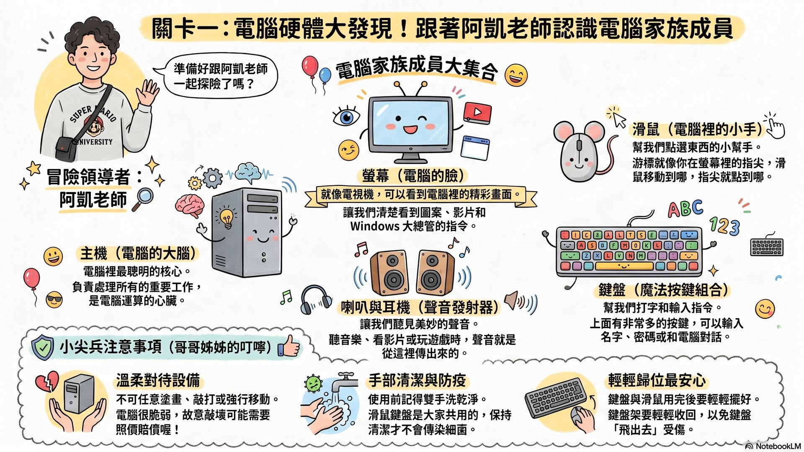
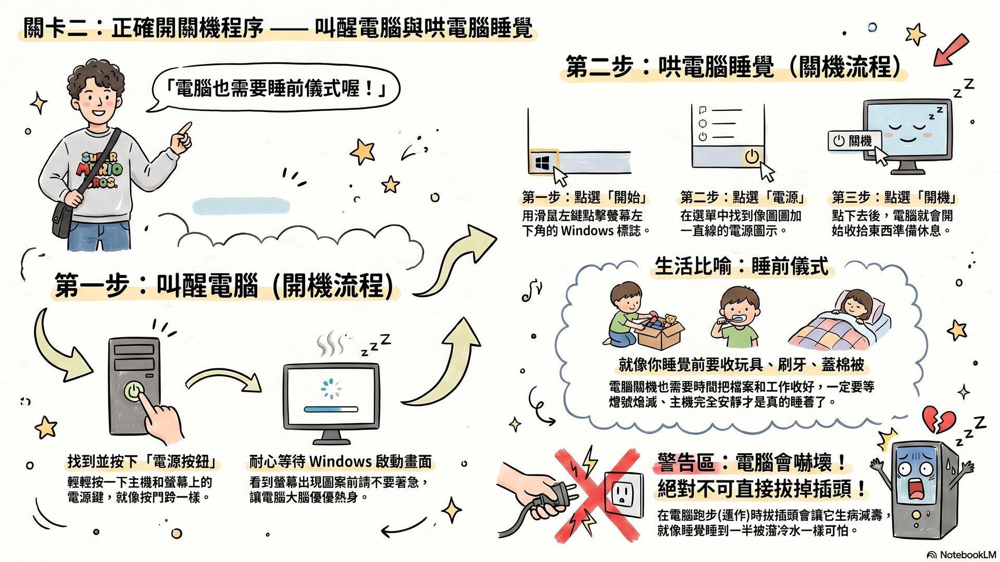
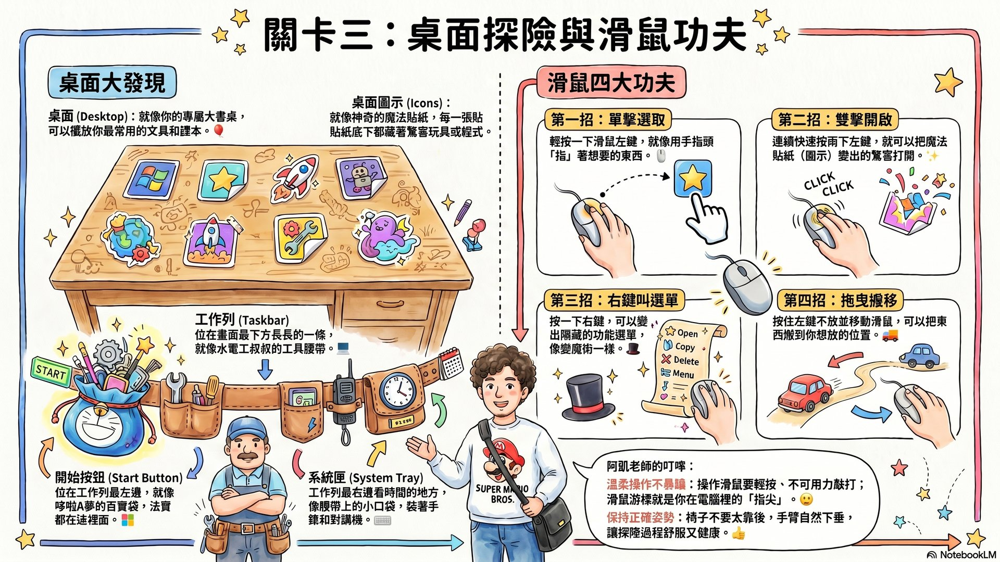
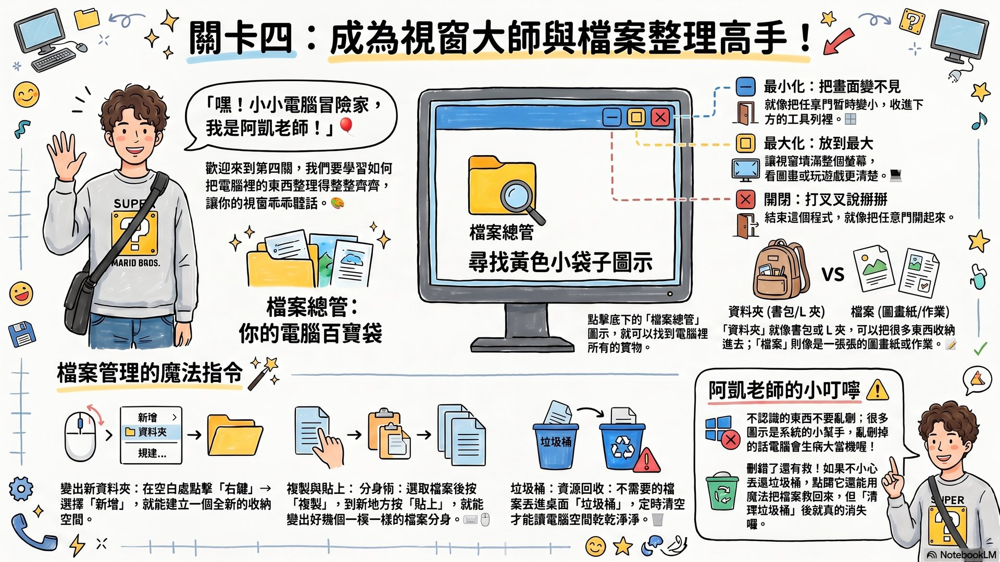

1 / 1

點擊正確的硬體名稱，把它連到對的功能！全部答對就過關囉～
建議實體展示一台拆開外殼的舊主機，讓學生看見內部主機板、硬碟、記憶體。透過視覺與觸覺，建立「主機 ＝ 電腦大腦」的具體印象。並趁機重申電腦教室「三大守則」（雙手乾淨、不飲食、輕按鍵盤），把行為規範與課程內容綁定。

按順序點擊「開始」→「電源」→「關機」三個按鈕。順序錯了會被提示喔！
對三年級而言，「為什麼不能拔插頭」需要具體比喻。可請小朋友想像「跑步跑到一半被突然撞倒」的感覺。並補充學校電腦教室「下午最後使用者要關機、確認主機完成關機後才能關閉電源」的習慣。

畫面上會浮出 4 色氣球：藍 = 單擊、綠 = 雙擊、橘 = 右鍵、粉 = 拖曳。用對的滑鼠功夫戳破它們！
建議先帶小朋友實際操作 Windows 開始功能表，把「百寶袋」比喻具象化。氣球戳戳樂遊戲可拿來計時競賽：誰在 30 秒內得分最高。提醒小朋友「右鍵 → 顯示其他選項」可以叫出 Win11 完整選單。

老師會出題：「現在請按 OOO 按鈕」。點對視窗右上角的對應按鈕（_ □ ✕）就過關！
建議搭配實際打開檔案總管，讓學生在自己的「文件」資料夾建立一個「我的三年級作品」資料夾。重新命名（Win11 是筆形圖示）的操作可作為下一節課小畫家作業繳交的前置技能。提醒「清空垃圾桶」是不可逆的動作。
把今天學到的功夫用在真正的電腦上：
用滑鼠在電腦旁邊指出五個成員（螢幕、主機、滑鼠、鍵盤、喇叭），念出它們的名字給同學聽。
用「自黏便箋」（sticky notes）寫下今天學到的「滑鼠四大功夫」，換成不同顏色貼在桌面上。
打開檔案總管，在「文件」裡建立一個叫「我的三年級作品」的資料夾，下節課要把作品放進去！
想要更深入學習嗎？這三個 NotebookLM 筆記本陪你練功！
本駕駛艙簡報、影片、資訊圖表的來源；含主講者阿凱老師人物模板。
PRIMARY11 個網路來源整合：電腦教室規則、Win11 教學、自黏便箋、檔案總管…完整研究知識庫。
RESEARCHNotebookLM 首頁。你也可以上傳教材、生成你的專屬簡報、影片、資訊圖表！
START